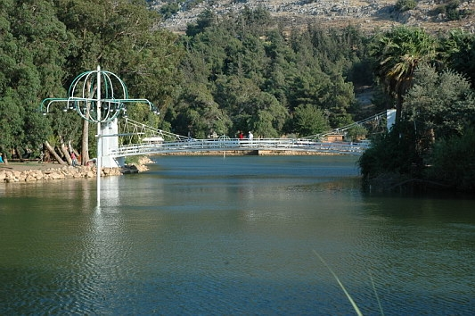
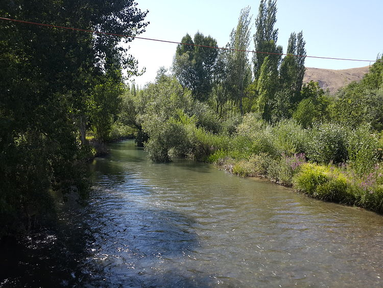

| Reyhanlı |
- Reyhanlı
- Tarihçe
- Ulaşım
- Nüfus
- Ticaret
- Ekonomi
|  |
Ülke |
Türkiye |
| İl |
Hatay |
| Coğrafi Bölge |
Akdeniz |
| Yüzölçümü |
592 km2 |
| Rakım |
160 m |
| Posta Kodu |
31500 |
| İl Alan Kodu |
0326 |
| İl Plaka Kodu |
31 |
|  |
Reyhanlı birçok uygarlığa ev sahipliği yapmıştır. Tarihi İsa'dan önce Yontma Taş Çağı'na kadar uzanır.Binlerce senelik geçmişin tarihi henüz saptanamayan Hurriler ve Mitanniler'in Hatay'da egemenliklerinin izleri tespit edilmiştir. İsa'dan önce 1595'te Halep'te yapılan bir barış antlaşması sonucunda Hatay bölgesi Murşil'in ölümüne kadar Hitit Devleti'nin egemenliğine girmiştir. Daha sonra Asurlar, Persler, Büyük İskender ve MÖ 64 yılında da bölge Roma İmparatorluğu hakimiyetine girmiştir. M.S. 14 yılları arasında Ağustos döneminde her dört yılda bir tekrar edilecek olan olimpiyat oyunları Hatay'da başlar. Daha sonra Selçuklu-Bizans ilişkileri ve savaşları sürerken doğudan gelen Türk Akıncıları bölgeye girerler. Bölge halkı Türkler'i benimser. Özellikle Hristiyan Bizans'a karşı Türk-Arap birliği bu dönemde defalarca gerçekleşir. Selçuklu himayesinde akınların ve fetihlerin sürmesi 1067 yılında Hanoğlu Harun adlı bir Karahanlı prensinin Reyhanlı'daki Artah (Pınarbaşı) ve İmma (Yenişehir) kalelerini Bizanslılardan alması büyük yankılar uyandırır. 12.12.1084 tarihinde Antakya Süleyman Şah tarafından fethedilir ve 1085 yılında da Reyhanlı Bizanslılardan alınır. Reyhanlıdaki Artah ve İmma kaleleri stratejik önemleri nedeniyle sık sık el değiştirir. 1268 ortalarından itibaren bölgeye Memlüklüler girer. 1378 tarihinde Dulkadiroğlu Beyliği Amik Ovası'nı ele geçirir. Karışıklıklar bu dönemde de sürer. 24 Ağustos 1516 yılından itibaren Mercidabık Savaşı'ndan sonra Osmanlı'ların himayesine girmiştir. Büyük Reyhanlı Aşiretinin bulunduğu bölge aşiretleri ileri gelenlerin, Konya'da toplanarak 1690 yılında Osmanlı Devleti'ne bağlılıklarını bildirmişlerdir. 1865 yılında Derviş ve Cevdet paşaların komutasında bölgeye gelen ıslah birliğinin sonbahar da Amik Ovası'nın doğusunda Reyhaniye adıyla merkezi yerleşim birimini kurmuşlar ve Türkmen Boyları'nı mecburi iskana tabi tutmuştur. |
Hatay hava limani ile dunyaya baglanmistir. Havaalanindan reyhanliya ve reyhanlidan havaalanina servis ve ulasim hizmeti vardir. Reyhanlı, etrafındaki ilçeler ile komşu illere düzenli kara yolları ile bağlanmıştır. Yolların bir kısmının etrafı ağaçlıktır. Köy yollarının genelinin yolu asfaltlıdır. Ulaşılamayan köy yoktur. Yollar yaz kış ulaşıma açıktır Reyhanlı'dan her gün Ankara, İstanbul, İskenderun, Adana, Mersin gibi büyük merkezlere son model otobüslerle ulaşmak mümkündür. İlçeler arasında ise minibüs, taksi dolmuş seferleri sıkça yapılmaktadır. Gaziantep'e ise her gün minibüsle gidilebilir. Seferler karşılıklı yapılmaktadır. Hatay il merkezi Antakya'dan ise Türkiye'nin her tarafına doğrudan seferler olduğu gibi Suriye, Ürdün, S. Arabistan, Yemen gibi Ortadoğu ülkelerine ve İstanbul bağlantılı Rusya, Romanya, Bulgaristan başta olmak üzere bütün Avrupa'ya otobüsle ulaşmak mümkündür. En yakın hava alanı Hatay Havalimanıdır (57 km). En yakın deniz yolu İskenderun limanı (80 km), Cilvegözü gümrüğü (8 km) dir. Suriye-Halep şehri (55 km), İstanbul 1200 km, deniz (67 km) Çevlik plajıdır. |
|
Hatay nüfusu 2015 yılına göre 1.533.507'dir.
Bu nüfus, 769.131 erkek ve 764.376 kadından oluşmaktadır.
Yüzde olarak ise: %50,16 erkek, %49,84 kadındır.
| Yıl |
Toplam |
Şehir |
Kır |
| 1965 |
38.774 |
16.469 |
22.305 |
| 1970 |
40.583 |
20.196 |
20.387 |
| 1975 |
54.868 |
25.749 |
29.119 |
| 1980 |
73.622 |
31.003 |
42.619 |
| 1985 |
69.279 |
37.471 |
31.808 |
| 1990 |
63.254 |
42.451 |
20.803 |
| 2000 |
74.225 |
52.135 |
22.090 |
| 2007 |
82.391 |
60.073 |
22.318 |
| 2008 |
84.831 |
60.418 |
24.413 |
| 2009 |
86.059 |
61.306 |
24.753 |
| 2010 |
86.660 |
61.234 |
25.426 |
| 2011 |
87.877 |
62.360 |
25.517 |
| 2012 |
89.093 |
63.563 |
25.530 |
| 2013 |
88.925 |
88.925 |
| 2014 |
89.980 |
89.980 |
|
| Avrupa'nın Ortadoğu kapısı olan Cilvegözü sınır kapısı Reyhanlı ilçesi sınırları içerisindedir. E-5 karayolu (Europe-5) buradan geçer. Avrupa ülkelerinden gelerek Ortadoğu ve Afrika'ya gidecek kara nakli araçları Reyhanlı Cilvegözü sınır kapısından geçerler. Cilvegözü sınır kapısının Reyhanlı ekonomisine çok ciddi katkısı vardır. Reyhanlı'da haftanın belirli günlerinde ilçe pazarı kurulmaktadır. Tarım üreticilerinin bir kısmı ürünlerini burada pazarladıkları gibi, pazarcılığı meslek edinenlerde bu işi yaparak ihtiyaç duyulan ürünleri başka yerlerden getirerek burada satarlar. Vatandaşın çoğu haftalık ihtiyacını buradan karşılar. 1993 yılında Reyhanlı Borsasında çalışmalar sürmüştür. Ticaret ve Sanayi odasının kayıtlarına göre ilçeden birçok mal ihraç edilmiştir. |
|
| Reyhanlı bir tarım ilçesidir. Tarım üretimi Türkiye ortalamasına göre yüksektir. Burada makinalı tarım yapılmaktadır. 310.000 dekarlık ekilen arazinin 200.000 dekarı sulanabilmektedir. Tarım ilaçlaması bir kısım sıvı gübreleme, tarım tipi uçaklarla yapılır. Tarım ürünlerinin bir kısma özel sektör tarafından alınmaktadır. İlçe sınırları içerisinde birçok sebzede üretilmektedir. Ürünlerin büyük bir kısmı başka şehirlere oradan da dış ülkelere (Ortadoğu-Rusya-Ortaasya ülkelerine) pazarlanmaktadır. İlçe merkezinde resmi ve özel tarım kuruluşları vardır. Tarım üretimi teknik elemanlarca daha iyi üretim için sürekli denetlenmektedir. |
|

|

|
|
|